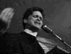

Provisional Chautauqua Players(from away)
(ie, all have given tentative consent...)
Enlightening Oratory
- Ronnie Dugger (Co-founder, Texas Observer & Alliance for Democracy)
"We are ruled by Big Business and Big Government as its paid hireling, and we know it. Corporate money is wrecking popular government in the United States. The big corporations and the billionaires have taken daily control of our work, our pay, our housing, our health, our pension funds, our bank and savings deposits, our public lands, our airwaves, our elections and our very government. Will they continue to divide us and will we continue to divide ourselves, according to our wounds and our alarms, until they have taken the country away from us for good?"WRITINGS: "The Call: Real Populists Please Stand Up!"
WEBPAGE: Alliance for Democracy
- Richard Grossman (Co-founder, Program on Corporations, Law and Democracy)
"A new abomination, the so-called 'Free Trade Agreement of the Americas,' is not an agreement about 'free trade.' It is a corporate property rights agreement...a corporate governance agreement. And so every time an opponent publishes a book or pamphlet denouncing this agreement and calls it a 'free trade' issue, corporate operatives win a great victory...WRITINGS: "Taking Care of Business""Every time opponents say that the appropriate response to 'free trade' is 'fair trade,' they reinforce the corporate idea that this controversy is about 'trade,' and not about dictatorship by the few who run global corporations.
"Let us reject all corporate language -- which is, after all, the language of deception and sales. We can speak clearly and simply about how laws advantaging corporate interests over human rights are fundamentally illegitimate, unjust, anti-democratic. This would make it easier for people everywhere to see that each time corporations increase their authority under law, they exterminate people's rights."
- "The Strategy for Electricity is Democracy"
WEBPAGE: www.poclad.org
- Doris "Granny D" Haddock - At 90, still a booming voice against corporate usurpation.
"What the WTO is rapidly becoming, of course, is the commercial version of the United Nations, but one without open, democratic processes or a balanced view. It is dominated by the interests of multinational corporations who achieve their place at the table, to our exclusion, through the corruption of politics with corporate money in this and other nations. In our country, that corruption extends to the highest officers of the land, who have become the handmaidens of corporate interests at the expense of human rights, of our environment, and of the stability of our middle class.WRITINGS: "The Monster at the Door""The protests are a part of the struggle between the human scale and the monstrous scale of overlarge commercial enterprises and their hired governments... It is an extension of the old battle that Theodore Roosevelt fought and lost at the beginning of the 20th century. He fought against over-large businesses enterprises. He defended the family farm and the small business against those damaging monopolies and trusts. The Republican Party was split between the small business and big business factions within its own ranks. The big business element won the day, and Teddy Roosevelt's brand of politics went underground, poking up from time to time in various populist uprisings. It reemerges today at a time when large scale commercial institutions rule the earth like aliens in some science fiction story. It reemerges now at the end of the century, demanding satisfaction..."
"Our first priority today is to defeat utterly those forces of greed and corruption that have come between us and our self-governance."
- "Money is not Speech;
- Corporations are not People
"- "Granny D: Walking Across America
- in My 90th Year
"
WEBPAGE: www.grannyd.com
- Jim Hightower ( aka "America's Most Popular Populist")
"It is not that corporation over there or this one over here that is the enemy. It is not one industry's contamination of our drinking water or another's perversion of the lawmaking process that is the problem--rather it is the corporation itself that must be addressed if we are to be a free people... The piecemeal approach to fighting corporate abuses keeps us spread thin, separated, on the defensive, riveted on the minutiae, and fighting on their terms. Piecemeal battles must certainly continue, for there are real and immediate corporate harms to be addressed. But it's time for our strategic emphasis to shift to the offensive, raising what I believe to be the central political issue for the new century: Who the hell is in charge here?�CHAUTAUQUA INTRO IN PORTLAND PHOENIX:
"Jim is America's best translator of the people's values into the English language. He wowed our national convention, but he also wows everyone. His is the clearest 'voice of the people' in the US in my lifetime." -- Ronnie Dugger
"Maine Elected to Kickstart a Movement"
- WRITINGS:
- "If The Gods Had Wanted Us To Vote,
- They Would Have Given Us Candidates
",
- "There's Nothing in the Middle of the Road
- but Yellow Stripes and Dead Armadillos
"
WEBPAGE: www.jimhightower.com
- David Korten - Harvard prof & US AID exec come in from the cold, Korten is a primal force in the worldwide anti-corporate rebellion
"It is a basic premise of democracy that each individual has equal rights before the law and an equal voice in political affairs--one person, one vote. We can rightfully look to the market as a democratic arbiter of rights and preferences only to the extent that money and property are equitably distributed. Although a market can allocate efficiently with less than complete equality, when 358 billionaires enjoy a combined net worth of $760 billion--equal to the net worth of the poorest 2.5 billion of the world's people--the market is neither just nor efficient and it loses all legitimacy as a democratic institution."WRITINGS: "When Corporations Rule the World,""The Seattle demonstrations announced the birth of perhaps the most truly international movement in human history--a movement with a well developed analysis, a deep commitment to economic justice, and an informed and articulate membership for whom concern for issues relating to trade is incidental to their concerns for human and planetary life and their commitment to the democratic ideal that every person has the right to a voice in the decisions that affect their lives...
"Whether out of ignorance or intent to discredit, pundits of the corporate press portrayed the Seattle demonstrators as selfish, ill-informed, and disheveled malcontents who sought to close national borders, end trade, and consign the poor to perpetual misery. In other words the pundits completely missed the real story, a troubling reminder of the sorry state of the corporate news media in the United States."
Dr. Korten is cofounder\chair of Positive Futures Network, publishers of YES! A Journal of Positive Futures, and founder\president of The People-Centered Development Forum - Full Bio
- "The Post-Corporate World:
- Life After Capitalism
"
WEBPAGE: The People-Centered Development Forum
- Carolyn Chute - Famed novelist and co-founder of the 2nd Maine Militia
FROM NEWDEMOCRACYWORLD.ORGFULLMONTY AT: New Democracy World"Carolyn is real. The two militias she works with are real. But the interviewer here is not. This piece is written by Carolyn, who insists "the interview style is much more interesting than essays or articles, but real living, breathing interviewers fudge everything�therefore what they write is fake."
"The fictional interviewer is a representative "institutionally educated" urban-valued, nondescript so-called liberal person who will be known as IUNLP. Carolyn, an uneducated redneck novelist, will be known as CC."
EXCERPTS:
CC: In the late 1800s�McKinley era�when the Farmers� Alliance became powerful and the Populist Movement was sending out feelers into the world of established politics, the bankers and big companies who were threatened by this prospect of a possible democracy poured, shoveled and crammed the Republican Party full of bucks, and the party hired a guy named Mark Hanna as the first real campaign PR man and the "Great Society" was created or "Progressive Society" or...you know..." The American Dream." This got most of America to associate the flag, the Bible and clean hands with the Republican Party. Populists were "Granby" and "barefoot" and "socialist" and "un-American." I have often thought how the Cleaver family and the Brady Bunch were actually conceived in the McKinley era. Work, shop, cut your hair, wash your hands, don't complain, love your System and your Country no matter what. Succeed! It was important for people to get the flag, God and Big Biz a bit confused. It was important to be cheerfully subservient and well- behaved and to see rebels as likened to foreign-influenced criminals, to see democratic action as confrontational and naughty. Like, go to the principal's office! This plan, seeping into all our culture, was very effective.IUNLP: Damn Republicans.
CC: The Democrats were no saints. They didn't like the Populists any more than the Republicans did. In the South, "The Party of the Fathers" was horribly threatened by this new populist party. The Democrats murdered people, did ballot-box stuffing and all manner of awful deeds. But, you see, the big money went into the Republican Party. It is the immeasurable power of big money that is the lesson here.
IUNLP: OK, so now we have mind control.
CC: The American Dream has served the capitalist elite very well. It has become not just a campaign slogan but our culture. At times it almost feels like it's part of our soul. Through every medium it has seeped. It has filled every cradle. They send a yellow bus to our doors and we gladly shove our children aboard. For many years, day in and day out, the Great Society whispers into each sweet perfect little childly ear. Children are graded like slabs of meat. Pitted against each other for honors. Millions of children are culled out heart and soul because their talents are not academic or marketable, not valued, too tribal. The Great Society begins at 5 years old. And notice how schools in no way resemble home. There are no grammies or dads, babies or dogs hanging around to lend or need a hand. But schools do indeed resemble insurance companies! And politicians have the gall to say we-the-people have forsaken family values! ...
IUNLP: But again, let me get this straight. What does the No-Wing Militia Movement plan to do about corporate invasion of our capitals and a hundred years of mind control?
CC: (Chuckle) Well, as you see, we can't kill it with a gun. And we can't do it fast. It'll take many generations. We need to build individual self- respect in all Americans, not just the honor types. Our goal is for citizens to feel like a sovereign power first before they take the big step of cutting the corporate jugular, of dismantling corporate power. A corporation is not a person. It is a thing. It should have no human rights whatsoever, let alone sovereignty. We need to deflate all the myths of capitalism."
Carolyn in Op-Ed Land: Bringing our Government Back to Earth
Salon Magazine: Carolyn Chute's Wicked Good Militia"The author of "The Beans of Egypt, Maine" is leading an army of grave, silent woodsmen in a backwoods campaign against corporate greed."
Inspiring Performance
- Rev. Billy - Need to exorcise a chain store, board room or demonic rodent?
WRITINGS: Heated Anti-Disney/Starbucks Homilies
"IF you had been at the Disney store on 42nd Street the Friday evening before last, you might have caught the performance of the Reverend Billy of the Church of Stop Shopping. "Hallelujah children!" Reverend Billy called from the back of the store, an uninvited presence with a well-worn, husky voice. "Children, stop shopping for a moment," he entreated..."We are in hell now � can you feel the evil? � and Mickey Mouse is the Antichrist," declared the Reverend Billy, who is the alter ego of Bill Talen, a performance artist and social activist. He worked quickly through his points: that the Walt Disney Company's colonization of Times Square had destroyed local businesses; that its labor practices were questionable, so those "neurotic, big-eyed stuffed characters � Goofy and the wasp-waisted little Snow White � were in all likelihood made in sweatshops by children"; and that a preponderance of Disney characters and stories was "robbing our own children of any kind of unmediated childhood experience." Full monty at NY Times: "Consumerism and Its Discontents"
Reverend Billy's preaching in the Disney Store, he said, was an attempt to infiltrate the site of "purest anti-meaning," Disney's "high church of mind-deadening retail� where personal story, or any original action, receives its purest response in such evidence as people laughing hysterically, people quietly agreeing, people wincing, turning away in shame, people shouting in anger, people arresting me."
WEBPAGE: www.revbilly.com
A\V SAMPLES: Righteous Rants & Jeremiads
- Inanna, Sisters of Rhythm
"With songs from Africa, Inanna captures and exposes something primitive within all people. The way they reveal this primitive urge to dance is what makes Inanna breathtaking. Nothing is more beautiful than women getting together, letting no inhibitions get in the way and producing music that transcends race, gender or social status. Inanna is a truly thrilling and spine-chilling experience." - - Kathleen Brennan, Maine CampusWEBPAGE: Welcome to Inanna
A\V SAMPLES: Inanna CDs
- Raging Grannies
DEMOCRACY'S A DREAMWEBPAGE: Raging Grannies National Song Book, Raging Grannies Maine
Sung to: Row, Row, Row your BoatWTO controls the world,
That's the corporate scheme,
Profits 'n profits 'n profits 'n profits,
Democracy's a dream.
Lyrics by Hinda Kipnis
THE SYSTEM
Sung to: My Bonnie Lies over the Ocean
They've sent our jobs out of the country,
They've sent our jobs over the sea,
It's time that we made a commotion,
OH, get rid of NAFTA for me.
NAFTA, NAFTA, oh, get rid of NAFTA for me, for me,
NAFTA, NAFTA, oh, get rid of NAFTA for me.
They've downsized the wages, not profits,
They're managing all of our health,
It's time for a new distribution,
Give workers their share of the wealth.
The bosses get millions in bonus,
The workers get minimum wage,
It's time for a different system,
Let's write a brand new page.Lyrics by Kay Thode
MONSANTO'S CHEMICAL RESTAURANT
Sung to: Alice's RestaurantThey won't say what they're cooking today
At the chemical restaurant.
Maybe it's beans with monkey genes,
At the chemical restaurant.
You get one sore breast or maybe both,
Maybe the milk is full of bovine growth,
They won't say what they're cooking today,
At the chemical restaurant.
They won't say what they're zapping today
At the chemical restaurant,
They can't wait to irradiate,
At the chemical restaurant,
Thanks to Monsanto it looks so good,
We mustn't bitch if it tastes like wood,
They won't say what they're zapping today
At the chemical restaurant.
They won't say what they're cooking today
At the chemical restaurant,
The almighty sods are playing God,
At the chemical restaurant,
They're patenting seeds,
You know what's next,
If we don't stop them,
They'll be patenting sex,
They wont' say what they're cooking today,
At the chemical restaurant.
Lyrics by Galiano, B.C. Raging Grannies